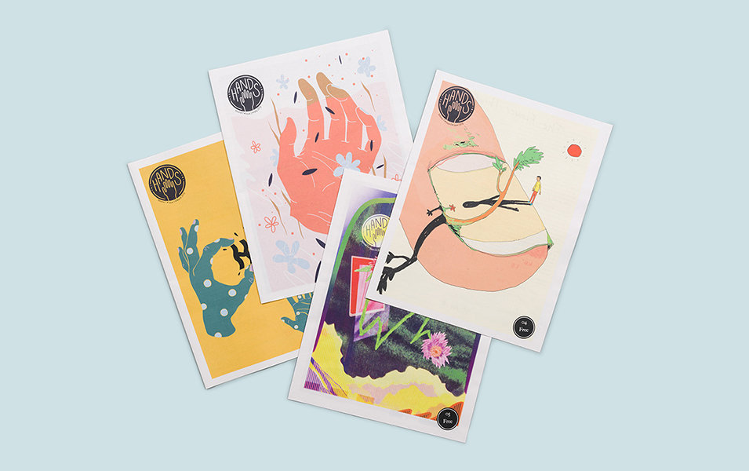

“On a trip to New Orleans last year, Chelsea Trout and Arpan Somani came across the city’s alternative newspaper Antigravity in a coffee shop. Flipping through pages of offbeat perspectives on local art and culture, the pair had what they call a “what if moment”: What if they started a free newspaper like that for their community back home in Brooklyn?” -Newspaper Club
And so we founded HANDS, we built our list of contributors, and we created a team of editors. We curated, edited, and designed each issue and hand delivered it to various locations throughout Brooklyn, NY. In Volume 1 we printed 9 issues and crowdfunded $6K to cover production costs.
Press: Newspaper Club, Stack Magazine

And so we founded HANDS, we built our list of contributors, and we created a team of editors. We curated, edited, and designed each issue and hand delivered it to various locations throughout Brooklyn, NY. In Volume 1 we printed 9 issues and crowdfunded $6K to cover production costs.
Press: Newspaper Club, Stack Magazine